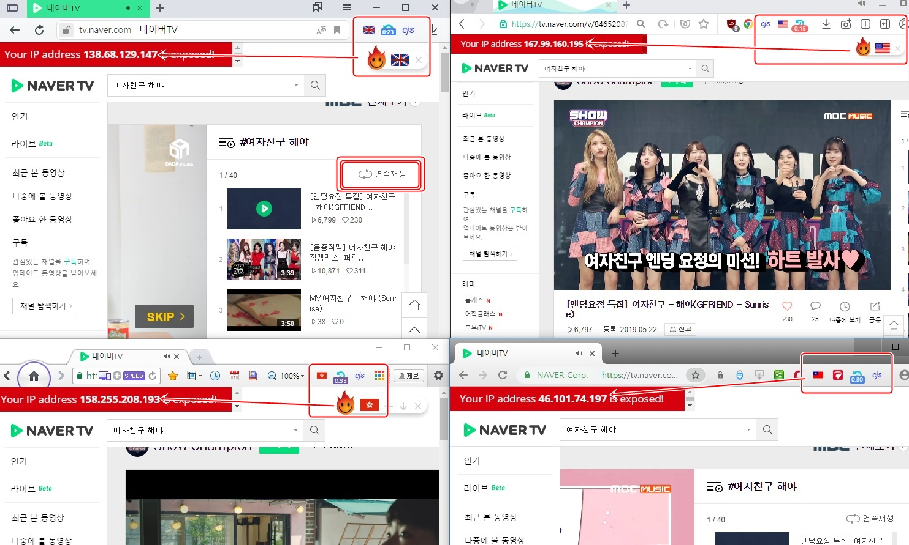

cjs 플러그인 설치
Hola VPN 설치
Auto Refresh 설치
1. 위 플러그인 모두 설치(크로미움 브라우저에서 추가)
2. 네이버TV 링크로 이동
3. Hola VPN 켜고 국가 선택
4. cjs 스크립트 복붙 저장
5. Auto Refresh 1분으로 설정
1. 네이버TV에서 아래 cjs 소스코드 등록 (컨트롤키 + A , C , V)
https://tv.naver.com/v/5084956 엠카
뮤뱅,음중 : 해외ip 재생불가, 간혹되는 아시아 쪽 ip들도 있음
4개 브라우저에서 각각 다른 ip로 스밍하면 4배 효과
